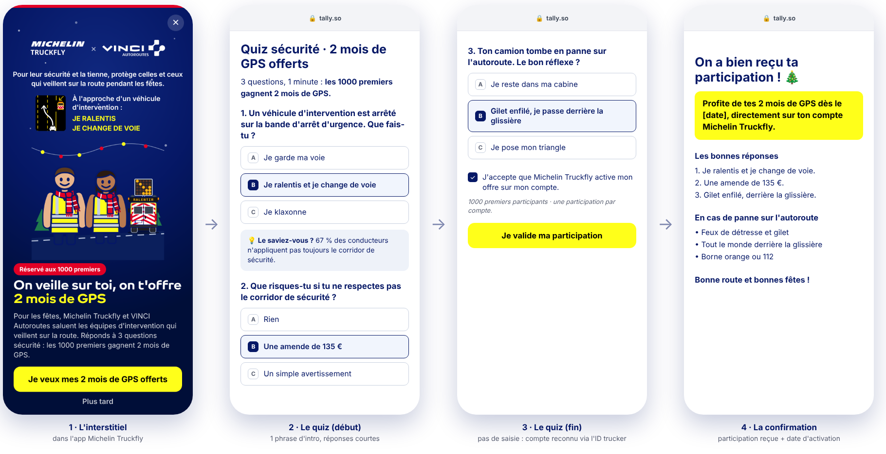
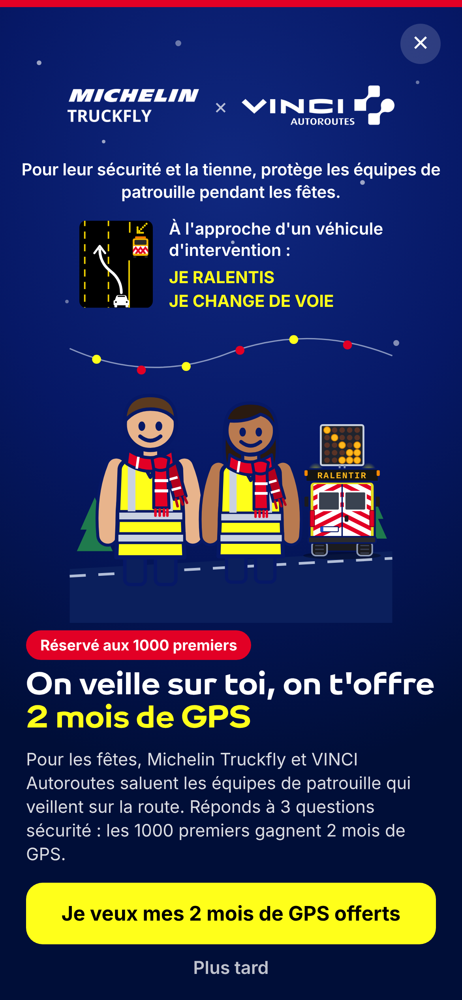
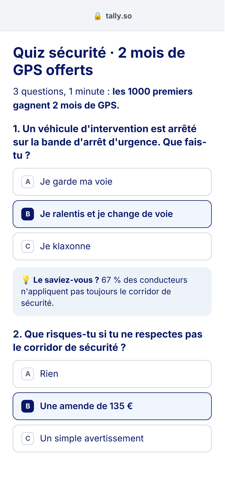
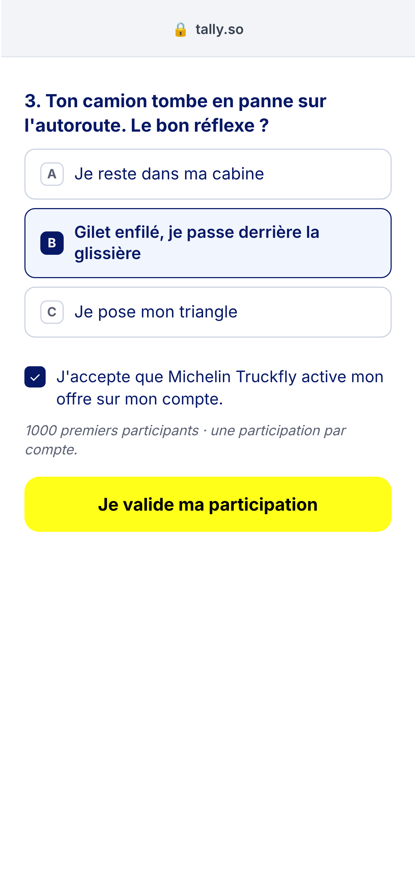
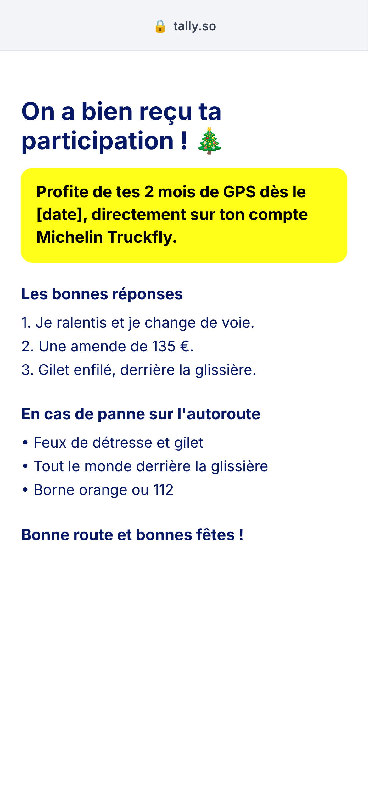

Michelin Truckfly × VINCI Autoroutes


Écran 1
S'affiche au lancement de l'app Michelin Truckfly. Le bouton ouvre le quiz, « Plus tard » ou la croix le ferment.

Écran 2
Une phrase d'introduction, puis les questions 1 et 2, avec des réponses courtes.

Écran 3
Question 3, consentement et validation. Aucune saisie : le compte est reconnu par l'identifiant trucker.

Écran 4
« On a bien reçu ta participation », la date d'activation des 2 mois de GPS, les bonnes réponses et les réflexes en cas de panne.